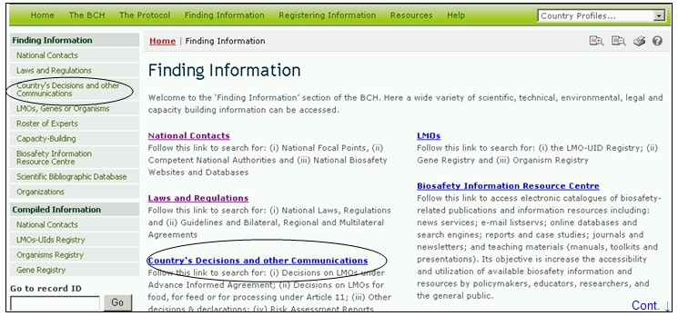
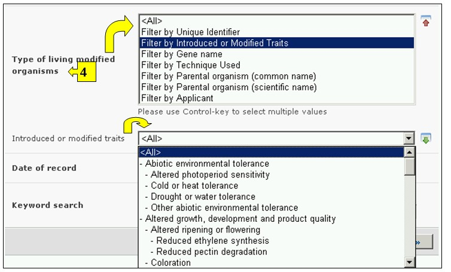

URL: http://bch.cbd.int/database/decisions/
在卡塔赫纳议定书下，缔约方有责任通过生物安全信息交换所提供本国的有关决定、声明和其他通报的信息。
可通过导航工具条上的查询信息下拉菜单上的链接、或通过查询信息页面左侧菜单中的链接或同一页面上关于国家决定和其他通报文字中的链接进入搜索国家决定和其他通报的界面。

图 29
在本数据库中用户可搜索有关下列方面的决定和其他通报：
1. 风险评估报告
2. 事先知情同意程序下的所有决定
- 第 10.3(a)条 – 批准进口，有条件或无条件
- 第 10.3(b) 条 – 禁止进口
- 第 10.3(c) 条– 要求补交更多相关信息
- 第 10.3(d)条 – 告知通知者期限延长
- 在议定书生效前做出的有关改性活生物体释放的决定
3. 第11条下的所有决定
- 第 11.1条 - 用作食品或饲料或用于加工目的的改性活生物体的国内使用
- 第 11.4条 – 在国内框架下做出的有关用作食品或饲料或用于加工目的的改性活生物体的进口
- 第 11.6条 – 在缺少国内框架情况下做出的有关用作食品或饲料或用于加工目的的改性活生物体的进口
- 在议定书生效前做出的有关用作食品或饲料或用于加工目的的改性活生物体的国内使用或进口的决定
4. 在第6、13、14、17和25条下的决定、声明、通知或报告
- 第 13.1a 条- 简化程序，发出通知的同时进口
- 第 13.1b条 – 简化程序 – 免除事先知情同意程序的进口
- 第 14.4 条 – 适用于具体进口的国内规定
- 第 17.1条 通知 – 无意造成的越境转移
- 第 25.3条 通知 – 非法越境转移
- 第 6.1条 – 过境
- 第 6.2条 – 封闭使用
5. 在议定书生效前做出的有关改性活生物体进口或释放的决定
6. 批准或加入议定书时作出的声明
- 不在事先知情同意程序范围内的田间试验
7. 其他决定、声明、通知或报告
在 搜索国家决定和其他通报 页面上有六个搜索标准框，可用于对该数据库中的搜索进行进一步限定。每一个搜索标准框均有一个下拉式菜单，用于选择所需的标准。每一个下拉菜单的缺省设置是菜单列表顶端的第一个选项。在每一个方框的右侧有一个按钮，使用户可以启动多重选择。一旦进入多重选择模式，可在按住Ctrl（控制）键的同时点击有关标准从而在选择中添加更多标准。

图 30
方框1[选择一个国家]在下拉菜单中列出了所有国家名，以便用户选择一个或多个具体国家进行搜索。

图 31
方框2[选择国家集团]在下拉菜单中列出了国家集团名，以便用户选择一个或多个具体的国家集团进行搜索。国际集团清单包含所有主要的地理或政治国家集团，可将搜索范围限定在只由选定的集团成员提交的纪录条。

图 32
方框3[决定、声明、通知或报告]列出了数据库中所有类型的国家决定和其他通报。这可用于将选择限制在有关改性活生物体使用的某些特定方面的决定或通报。

图 33
方框4[改性活生物体类型]使用户可对改性活生物体的不同方面进行筛选过滤，进一步将搜索限定在与所选定的具体标准有关的记录条范围。可供选用的筛选过滤器类别如下：(一) 改性活生物体，通常具有一个独特识别码（如 MONØØ81Ø-6), (二) 引进或被改编的特性（如抗草甘霖除草剂）， （三) 基因名（如 Cry1A(b)), (四) 所使用的工艺（如以土壤杆菌为媒介） ,(五) 亲本生物体常见名（如Maize（玉米））, (六) 亲本生物体学名（如Zea mays（玉米）) 或 (七) 申请人（自由输入文字 – 如 Monsanto（孟山都）)。
在下拉菜单中选择一个或多个过滤器标准会打开更多具有下拉菜单式选项的搜索方框，与所选的过滤器一一对应。使用Ctrl （控制）键（在按下Ctrl （控制）键的同时点击有关过滤器标准）可添加多重过滤器。

图 34
方框5[记录日期]允许用户根据数据纪录条在生物安全信息交换所登记的日期限定搜索范围。下拉菜单提供了将搜索限定在某一选定时间间隔（如“前一天”、“上个月”、“去年”等）内的若干个选项。

图 35
方框6[关键词搜索]可使用关键词缩小搜索范围。用户可使用标准关键词句法（结合使用“和/或”）搜索多个词或词的核心部分（如“进口或出口”）。使用关键词进行的搜索结果只显示含有与被搜索文字完全一样的纪录条而不会包含未输入的同义词（例如，只用一个关键词“Maize”(玉米)进行搜索的结果包括含有“Maize”的纪录条而不包括含有“Corn”或”Zea mays”（玉米同义词）的纪录条。

图 36
搜索页共有三个按键用于生成查询结果。 键（搜索界面的顶端和底部均有）使用户根据在搜索功能方框中选择的搜索标准启动搜索。搜索结果缺省设置为根据国家名字母顺序排列。 (位于搜索界面的底部)使用户可获得本数据库中所有记录条的列表。
若搜索产生的记录超出1000条则截去剩余部分只显示前1000条。

图 37
搜索结果 页位于纪录条上方，具有对搜索结果进行排列的功能。这可用于根据针对具体信息类型的标准对纪录条进行排列。注意当用户选择不同的搜索标准时，排列标准也随之变化。

图 38
示例：用户希望查找新西兰在议定书第11条下做出的所有决定。在选择国家方框中选择新西兰。在决定、声明、通知或报告类型框中选择第11条下的所有决定。 点击
搜索结果以纪录条列表的形式显示。可通过选择决定标题（蓝色粗体字）察看每一条记录的详细信息。

图 39

图 40